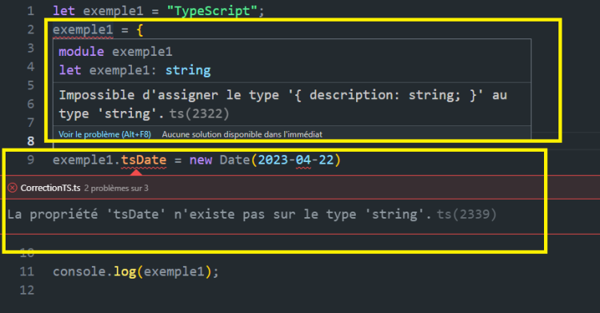

TypeScript est un superset ou un sur-ensemble de JavaScript, ce qui veut dire que JavaScript est un sous-ensemble de TypeScript. Pour être plus précis, TypeScript est comme le JavaScript, sauf qu’il possède un typage en plus. On peut aussi le définir comme une version améliorée de JavaScript.
Il a été élu The 2nd most loved programming language sur StackOverflow developer survey en 2020, et troisième des Most Wanted Programming Language en 2022.
TypeScript a été développé en 2010 par Microsoft, afin de pallier les limitations qu'avait JavaScript lors du développement de projets d'envergure. Il a d’abord été utilisé pour des projets internes à Microsoft avant d’être disponible mondialement en 2012. Depuis, de nouvelles versions sont sorties. En 2013 sort TypeScript 0.9, TypeScript 1.0 a été publié en 2014, puis, TypeScript 2.0 en 2016, TypeScript 3.0 a été publié en 2018, la version 4 est sortie en février 2021. La version la plus récente est la version 5 sortie en mars 2023.
Ceci est un bref historique pour vous remettre dans le contexte. Maintenant, nous allons comprendre l’intérêt d’apprendre ce langage. Qu'a-t-il de si particulier ? JavaScript n’est-il pas mieux ?
JavaScript est de loin le langage le plus utilisé si on en croit les statistiques. Il possède une communauté très forte, et existe depuis plusieurs années que ce soit sur les navigateurs ou encore sur les serveurs. Alors pourquoi utiliser TypeScript ?
En effet, JavaScript a beaucoup de mérites, cependant, il a aussi beaucoup de lacunes, notamment pour le développement de grands projets.
Pourquoi les grands projets ? Les grands projets demandent plus de rigueur, et ça, c'est le talon d’Achille de JavaScript. De plus, pour la cohésion des équipes qui travaillent sur le projet, documenter le code tout au long de développement n’est pas automatique sur JavaScript. De plus, JavaScript est trop permissif et difficile à déboguer. Il est tout de même important de rappeler que JavaScript reste le langage de programmation le plus couramment utilisé pour le développement d’application. De plus, il est nécessaire de compiler les applications développées en TypeScript vers JavaScript pour pouvoir les exécuter, ce qui rend ce langage incontournable.
Comment TypeScript peut-il pallier ces lacunes ?
TypeScript est considéré comme une version améliorée de JavaScript, ce qui n’est pas faux, étant donné qu’il élimine les défauts cités précédemment, tout en gardant ce qu’il y a de meilleur dans JavaScript.
Voici une liste non exhaustive des avantagesavantages de TypeScript :
Comme mentionné précédemment, connaître JavaScript n’est pas une obligation, cependant, avoir des bases en JavaScript vous sera d’une grande utilité. Si nous regardons bien le code ci-dessous, nous comprendrons pourquoi.
See the Pen Untitled by OpenSpirit (@OpenSpirit) on CodePen.
Lien ReplitSee the Pen Untitled by OpenSpirit (@OpenSpirit) on CodePen.
Dans le cas de déclaration d’objets comme ci-dessus, il n’y a aucune différence entre TypeScript et JavaScript, mis à part le point-virgule. Dans la déclaration des variables, c'est aussi identique. Voir l’exemple ci-dessous :
See the Pen Untitled by OpenSpirit (@OpenSpirit) on CodePen.
See the Pen Untitled by OpenSpirit (@OpenSpirit) on CodePen.
JavaScript est un langage dynamique, ce qui signifie qu'il est très souple dans la façon dont il vous permet de définir et d'utiliser les variables. Dans l’exemple ci-dessous, nous avons déclaré 2 variables sans assigner de type comme sur TypeScript.
Ce qui veut dire que vous pouvez décider de créer une variable et de lui affecter une chaîne de caractères, puis de réaffecter à cette même variable un nombre, sans avoir de message d’erreur. Voir l’exemple ci-dessous.
See the Pen Untitled by OpenSpirit (@OpenSpirit) on CodePen.
Lien ReplitCertains développeurs diront que ceci est plutôt un avantage, mais cela peut causer beaucoup de confusion. Et pour être plus précis, la nature dynamique de JavaScript nous permet de faire virtuellement tout ce qu’on veut, et donc de faire toutes les erreurs possibles et imaginables aussi.
Si nous prenons un autre exemple, il y a au moins une erreur par ligne de code dans l’exemple ci-dessous, et les erreurs n'apparaissent qu’après exécution.
See the Pen Untitled by OpenSpirit (@OpenSpirit) on CodePen.
Lien ReplitSi nous laissons ce code tel quel dans notre application, il risque de causer quantité de problèmes sans pouvoir déterminer la source des erreurs. En d'autres termes, notre application ne fonctionnera pas, et nous n’aurons pas la moindre idée de l’origine de l’erreur. Ce genre de problème peut faire perdre un temps considérable.
Nous parlons de JavaScript pour justement comprendre les avantages de TypeScript. TypeScript, par exemple, ne laissera pas passer ce genre d’erreurs. Comme nous le voyons sur la capture d’écran ci-dessous :
Comment ? En fait, TypeScript ajoute un typage statique fort, ce qui fait de lui un langage fortement typé, contrairement à JavaScript qui est un langage faiblement typé, voire non typé. Cela lui permet de vérifier le code au moment de la compilation et non pas à l’exécution.
Afin de mettre au clair les avantages ainsi que les inconvénients de TypeScript et JavaScript, voici une liste de leurs quelques atouts et limitations :
Avantages :
| TypeScript | JavaScript |
|---|---|
|
|
Inconvénients :
| TypeScript | JavaScript |
|---|---|
|
|
Notez bien que les inconvénients de TypeScript n’ont pas vraiment d’impact sur la qualité du code, nous avons juste une étape en plus à faire, qui est la compilation.
Cependant, si nous travaillons sur un autre runtime que Node.js, comme Deno ou Bun, par exemple, plus besoin de faire une compilation pour exécuter notre code ; ces derniers supportent nativement TypeScript. Plus loin dans le cours, nous allons voir ensemble les runtimes Deno et Node.js plus en détail.
De plus, beaucoup de frameworks frontend sont développés avec TypeScript comme Angular, Vue, Nest, etc. Nous avons aussi plusieurs runtimes qui ont émergé, qui support nativement TypeScript, tels que Bun, Deno, etc.